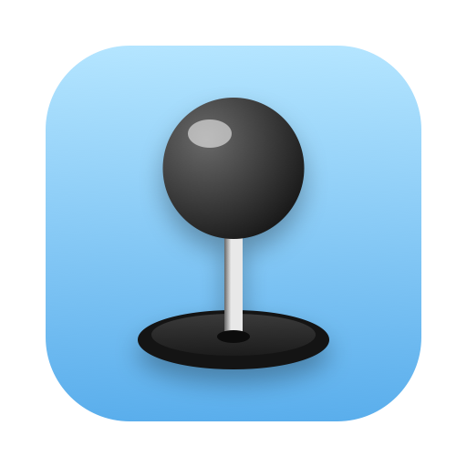

Every bus cycle
The 6502 models each cycle, dummy reads and writes included, plus the undocumented opcodes. Every access waits for a cycle ANTIC leaves free, so cycle stealing, WSYNC and interrupt timing fall out of the bus.

An Atari 800 XL emulator for macOS.
Accurate where games can tell the difference, and smooth where you can see it: scrolling as even as on the real machine.
For Apple silicon Macs with macOS 14 or later.
The 800 XL's CPU is a custom 6502C that Atari called "Sally". This emulator is written in C and Objective-C with nothing beyond the system frameworks: Cocoa, Metal, Core Audio and GameController.
The 6502 models each cycle, dummy reads and writes included, plus the undocumented opcodes. Every access waits for a cycle ANTIC leaves free, so cycle stealing, WSYNC and interrupt timing fall out of the bus.
GTIA draws each line in segments up to the beam before any register write, so colors and positions changed in the middle of a line show up exactly where they should.
On a 60 or 120 Hz display, Atari frames lock to refreshes, so each one is on screen for the same time. Pixels are drawn at whole multiples, so nothing ripples while scrolling.
POKEY's channels are integrated between divider events for each audio sample. The sample rate is nudged to keep the buffer level steady instead of drifting into dropouts.
A small built-in OS, written in 6502 assembly and assembled at startup, handles reset, interrupts and the vertical blank. No Atari ROMs needed to run cartridge games.
Drop a cartridge on the window or double-click it in Finder. Game controllers work as joysticks, and the last cartridge comes back at the next launch.
The 800 XL's metal keys sit on Command and the digits, in the order they appear on the machine. Its plastic keys are on plain Mac keys.
| Mac | Atari |
|---|---|
| Arrow keys | Joystick |
| Option | Fire |
| Cmd-1 Cmd-2 Cmd-3 | START, SELECT, OPTION (held) |
| Cmd-4 | HELP (held) |
| Cmd-5 Cmd-6 | RESET, power cycle |
| The key left of 1 | Inverse |
| fn-Delete | BREAK |
| Other keys | The Atari keyboard, by character |
| Game controller | Joystick (A, B or R2 fire) |
Cmd-P pauses, Cmd-0 fits the window to the picture, Ctrl-Cmd-F enters full screen.
QUADROP is a falling blocks game for the 800 XL on a 16K cartridge: seven colors in a character mode, pieces that glide a scanline at a time, and Korobeiniki on POKEY. Download the .car file and drop it on Sally's window.
You need macOS 14 and the Xcode command line tools.
git clone https://github.com/ecmel/sally.git
cd sally
make # build/Sally.app
make run ROM=game.rom # or drop a cartridge onto the window
make test # CPU tests
make install # copy to /ApplicationsCartridges are plain 8K or 16K images (.rom, .bin) or .car files of those types. Sally does not ship with any games.
Disk drives and SIO (no .atr or .xex), bank-switched cartridges, paddles, a way to load the BASIC ROM, and the finer GTIA quirks. Only NTSC is emulated.